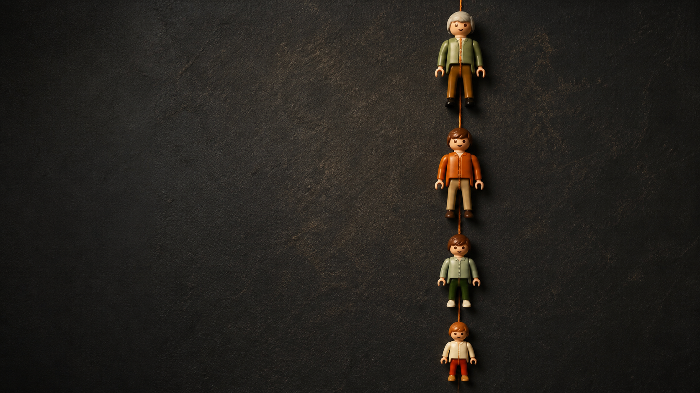
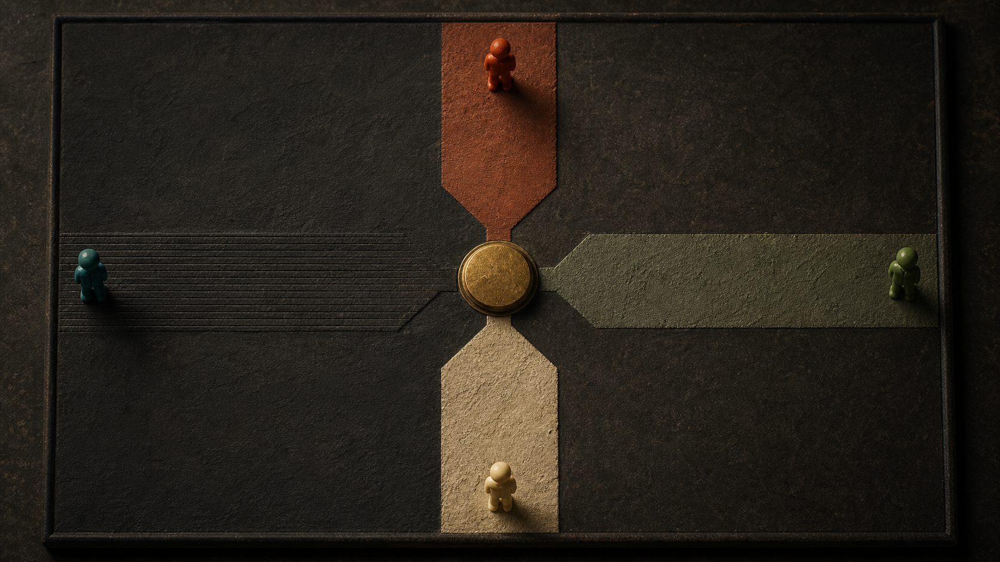
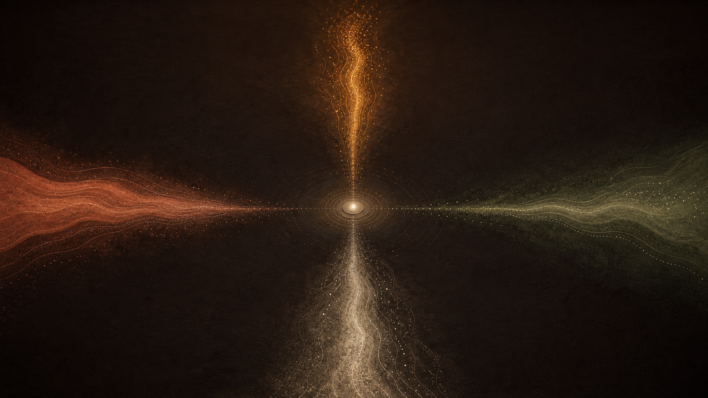
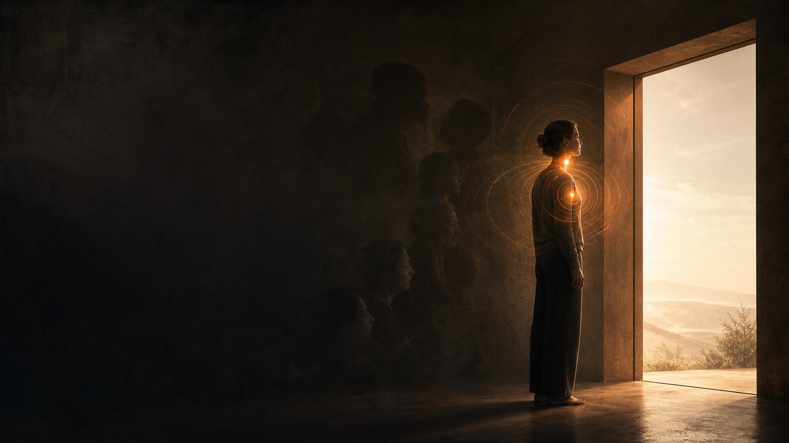
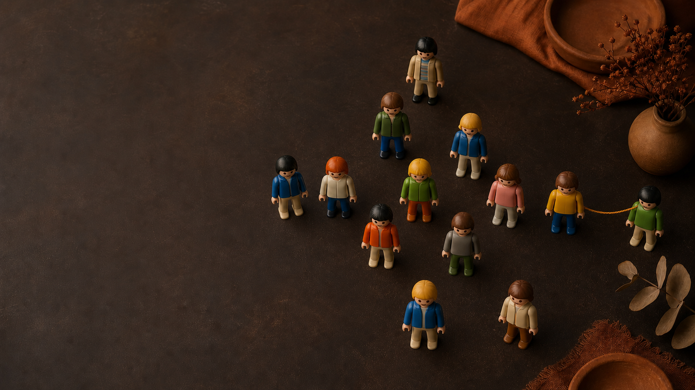
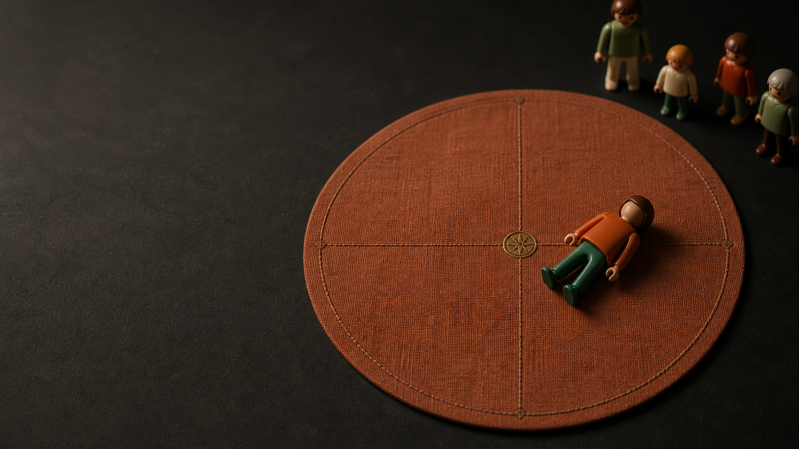
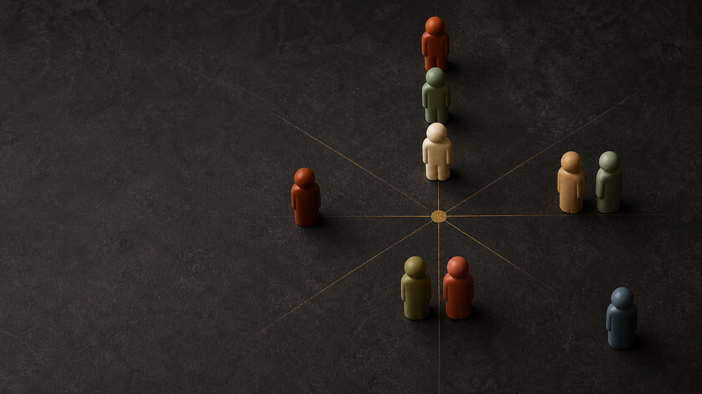

La línea paterna y el camino que caminas
Leer la línea paterna como una dirección, y reconocer la impronta que la marcó.
Por qué la paterna se lee aparte, y con qué mapa se lee.
Un caso real, trabajado en vivo, de principio a fin.
“Línea paterna” es una descripción literal.
Solo dos líneas genéticas pasan intactas de una generación a otra, sin mezclarse con el aporte del otro progenitor. Son las únicas que permiten hablar, en sentido literal, de línea materna y línea paterna.

La línea paterna llega a hijos e hijas.
El cromosoma Y marca la línea directa de varones. La línea paterna —el sistema del padre— alcanza a todos sus descendientes, por más de una vía.

Detrás de cada camino, un evento de la línea.
Exploración y búsqueda de lo nuevo.
La búsqueda de algo nuevo, o el impulso de dejar atrás lo que ya no satisface.
Motivaciones
- Deseo de cambio y de renovación.
- Curiosidad y exploración de nuevos territorios.
- Búsqueda de sentido ante el vacío o la crisis.
Eventos sistémicos
- Historias familiares de migración o desplazamiento, con lealtad inconsciente a seguir moviéndose.
- Pérdida de una figura clave (la muerte de un padre o un mentor).
Reactividad, miedo y supervivencia.
La lucha constante, el miedo y la reactividad como estado de base.
Motivaciones
- Necesidad de sobrevivir ante una amenaza percibida.
- Repetición de patrones de dolor y trauma del pasado.
- Evitar el conflicto desde una postura defensiva.
Eventos sistémicos
- Historias de guerra o conflicto que transmiten una mentalidad de supervivencia.
- Lealtad al sufrimiento de los antepasados, como forma de pertenencia.
Responsabilidad, compromiso y estabilidad.
Un fuerte sentido de responsabilidad y compromiso con los demás.
Motivaciones
- Cumplir con las expectativas de la familia o el entorno.
- Priorizar la seguridad y la estructura.
- Lealtad a los roles y responsabilidades heredados.
Eventos sistémicos
- Seguir los pasos de padres o abuelos, honrando la tradición familiar.
- Patrones de sacrificio: renunciar a lo propio por el sistema familiar.
Búsqueda de bienestar y satisfacción.
La búsqueda de satisfacción, comodidad y disfrute de la vida.
Motivaciones
- Deseo de bienestar: maximizar el disfrute.
- Comodidad y estabilidad emocional.
- Búsqueda de gratificación a corto plazo.
Eventos sistémicos
- Herencias familiares de comodidad y recursos.
- Patrones de dependencia del bienestar de otros, repetidos entre generaciones.
Un camino es el cruce de tres cosas.
Cada camino es el cruce de tres dimensiones que el terapeuta ya trabaja por separado: un metaprograma, un mecanismo de supervivencia y un movimiento sistémico. Aquí se leen de forma integrada.
El metaprograma
El filtro mental inconsciente con el que la persona procesa la información y decide.
El mecanismo de supervivencia
La respuesta del sistema nervioso autónomo — del mismo tipo que la impronta.
El movimiento sistémico
La lealtad familiar invisible: una historia de familia que empuja hacia un lado.
El filtro mental de cada camino.
El patrón inconsciente con el que la persona procesa la información y toma sus decisiones.
La respuesta del sistema nervioso.
Una respuesta del sistema nervioso autónomo, del mismo tipo que la impronta de la Sesión 1.

La lealtad familiar que empuja.
Cada camino tiene detrás una historia familiar que lo sostiene: la lealtad invisible.
Dos tendencias que se acompañan.
Los cuadrantes del Norte combinan direcciones que empujan en el mismo sentido.
Exploración hedonista
Exploración al servicio
Dos tendencias en tensión.
Los cuadrantes del Sur combinan direcciones que tiran hacia lados opuestos. Ahí vive la mayor parte del trabajo clínico.
Placer culpable
Sacrificio total

Se hereda el umbral, no el evento.
Una impronta es el ciclo defensivo que quedó activo cuando no pudo descargarse: el programa de supervivencia que sobrevive a la escena que lo originó. En lo transgeneracional, el descendiente hereda el umbral con el que su sistema dispara esa respuesta, sin haber vivido el evento.
Son trece improntas. Aquí trabajamos las siete primeras.
No interrogamos al cuerpo. Lo escuchamos.

La demostración.

El material sobre la mesa.
Tres piezas sencillas. El poder no está en el objeto, sino en la secuencia y en la lectura.
El lienzo
Una hoja con los cuatro ejes cardinales trazados, y los cuadrantes marcados en las diagonales.
La tabla giratoria
Sostiene el lienzo y permite mirar la caída desde distintos ángulos sin mover los muñecos.
Los muñecos
Uno por cada miembro de la familia que se trabaja, etiquetado con su nombre.
La caída del muñeco.
Se coloca el muñeco de pie en el centro, se levanta unos centímetros y se suelta. No se lanza ni se empuja. La dirección de los pies indica el camino.
Tres cosas que observar.
La dirección de la caída
Hacia dónde apuntan los pies del muñeco sobre el lienzo.
Las preguntas y su porqué
Lo decisivo está en las preguntas que siguen a la caída.
La conexión familiar
Cómo la caída se cruza con la historia de la línea.
Cada dirección abre una pregunta.

La imagen de toda la familia junta.
La lectura es del conjunto: qué dice la posición de todos los muñecos juntos, no de uno aislado.
Caminos iguales
Lealtad compartida: la familia entera se mueve en la misma dirección.
Caminos opuestos
Conflicto sistémico: una parte de la familia compensa a la otra.
Las posiciones
Quién mira a quién, quién ocupa el lugar de poder, quién queda excluido.
“Ahora que ves este patrón, ¿quieres seguir en este camino, o elegir una dirección distinta?”
Nombrar el patrón es, en sí mismo, un acto terapéutico: lo que se hace consciente puede elegirse, en lugar de repetirse en automático.
Dos formaciones para seguir después de hoy.
Los Caminos de la Vida
& Playmobil Pro
Los siete pasos, los cuadrantes, la familia entera sobre el lienzo — leer la línea a fondo.
Actos que Mueven
Actos físicos que el cuerpo registra como experiencia real. No se habla de rituales: se hacen.